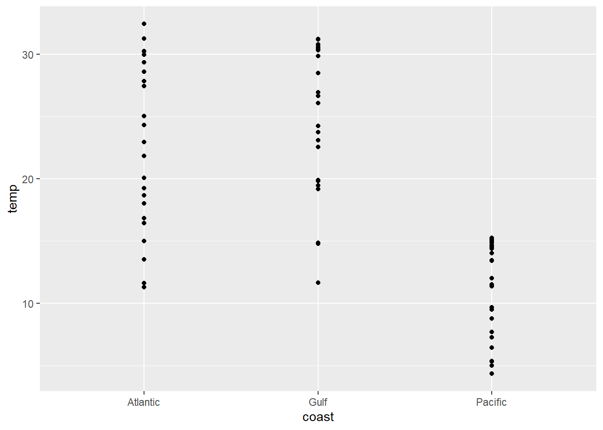

Session 1 - Visualize Data
## -- Attaching packages --------------------------------------------- tidyverse 1.3.0 --## v ggplot2 3.2.1 v purrr 0.3.3
## v tibble 2.1.3 v dplyr 0.8.4
## v tidyr 1.0.2 v stringr 1.4.0
## v readr 1.3.1 v forcats 0.4.0## -- Conflicts ------------------------------------------------ tidyverse_conflicts() --
## x dplyr::filter() masks stats::filter()
## x dplyr::lag() masks stats::lag()## here() starts at C:/Users/Dunnigan_S/Desktop/OPEN_PROJECTS/2020-06_GTMNERR_RWorkshop## Observations: 72
## Variables: 16
## $ station_code <fct> elkvmwq, elkvmwq, elkvmwq, elkvmwq, elkvmwq, elkvmwq, ...
## $ month <int> 1, 2, 3, 4, 5, 6, 7, 8, 9, 10, 11, 12, 1, 2, 3, 4, 5, ...
## $ temp <dbl> 13.45212, 13.43858, 14.47445, 14.05108, 14.66993, 14.8...
## $ sp_cond <dbl> 47.79754, 47.14642, 45.17911, 47.95116, 47.88332, 47.5...
## $ sal <dbl> 31.12386, 30.64885, 29.26568, 31.24729, 31.21267, 30.9...
## $ do_pct <dbl> 97.73401, 97.02522, 94.46424, 90.75708, 95.88461, 99.8...
## $ do_mgl <dbl> 8.404234, 8.368642, 8.049445, 7.707222, 8.044590, 8.35...
## $ depth <dbl> NA, NA, NA, NA, NA, NA, NA, NA, NA, NA, NA, NA, 0.5466...
## $ c_depth <dbl> NA, NA, NA, NA, NA, NA, NA, NA, NA, NA, NA, NA, 0.4942...
## $ ph <dbl> 7.898017, 7.764260, 7.890723, 8.001632, 8.047917, 8.14...
## $ turb <dbl> 8.373656, 4.515086, 18.305546, 6.349306, 4.309812, 5.2...
## $ chl_fluor <dbl> NA, NA, NA, NA, NA, NA, NA, NA, NA, NA, NA, NA, NA, NA...
## $ level <dbl> 1.1335988, 1.0995510, 1.0378017, 0.9633785, 1.0183300,...
## $ c_level <dbl> 1.0888172, 1.0359289, 1.0026555, 0.9381285, 1.0168817,...
## $ state <fct> California, California, California, California, Califo...
## $ coast <fct> Pacific, Pacific, Pacific, Pacific, Pacific, Pacific, ...Quiz
What relationship do you expect to see between temperature (temp) and dissolved oxygen (do_mgl)?
Your Turn 1
Run the code on the slide to make a graph. Pay strict attention to spelling, capitalization, and parentheses!
Your Turn 2
Add color, size, alpha, and shape aesthetics to your graph. Experiment.
ggplot(data = wq) +
geom_point(mapping = aes(x = temp, y = do_mgl,
color = state, shape = coast,
alpha = temp),
size = 5)
Your Turn 3
Using the wq data, plot temperature (temp) by month as a scatterplot and facet by state and coast. Play around with facet_grid() and facet_wrap().
What kinds of things do you notice?
ggplot(data = wq) +
geom_point(mapping = aes(x = month, y = temp, color = coast)) +
facet_wrap( ~ station_code)
Your Turn 4
Replace this scatterplot with one that draws boxplots. Use the cheatsheet. Try your best guess.

Your Turn 5
Load the diamonds dataset and examine it. ahem Remember the glimpse() function? This data set contains prices and other attributes of diamonds and is provided by the ggplot2 package.
Create a bar chart of cut colored by cut. Use the cheatsheet.
## # A tibble: 53,940 x 10
## carat cut color clarity depth table price x y z
## <dbl> <ord> <ord> <ord> <dbl> <dbl> <int> <dbl> <dbl> <dbl>
## 1 0.23 Ideal E SI2 61.5 55 326 3.95 3.98 2.43
## 2 0.21 Premium E SI1 59.8 61 326 3.89 3.84 2.31
## 3 0.23 Good E VS1 56.9 65 327 4.05 4.07 2.31
## 4 0.290 Premium I VS2 62.4 58 334 4.2 4.23 2.63
## 5 0.31 Good J SI2 63.3 58 335 4.34 4.35 2.75
## 6 0.24 Very Good J VVS2 62.8 57 336 3.94 3.96 2.48
## 7 0.24 Very Good I VVS1 62.3 57 336 3.95 3.98 2.47
## 8 0.26 Very Good H SI1 61.9 55 337 4.07 4.11 2.53
## 9 0.22 Fair E VS2 65.1 61 337 3.87 3.78 2.49
## 10 0.23 Very Good H VS1 59.4 61 338 4 4.05 2.39
## # ... with 53,930 more rows

Your Turn 6
Determine what the default stat is for each of the following geoms:
geom_line() geom_density() geom_smooth()
Your Turn 7
Predict what this code will do. Then run it.
## `geom_smooth()` using method = 'loess' and formula 'y ~ x'
Your Turn 8
What does getwd() return?
## [1] "C:/Users/Dunnigan_S/Desktop/OPEN_PROJECTS/2020-06_GTMNERR_RWorkshop"Your Turn 9
Save the last plot and then locate it in the files pane.
MINI CHALLENGE
Using the diamonds data make a scatterplot of carat by price and assign color by clarity. Customize the themes and colors of the plot to make it the ugliest plot that you can. Save this plot in your files pane.
ggplot(data = diamonds) +
geom_point(mapping = aes(x = carat, y = price, colour = clarity)) +
scale_color_brewer(type = "div", palette = "RdGy") +
theme(panel.background = element_rect(color = "purple"),
axis.text = element_text(size = 20),
plot.background = element_blank())
Take aways
You can use this code template to make thousands of graphs with ggplot2.